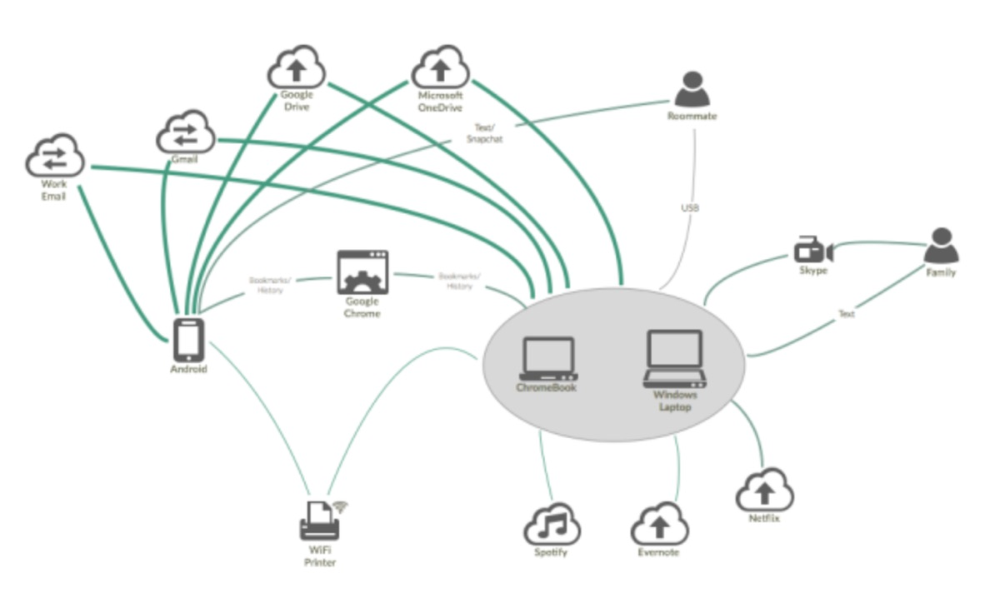
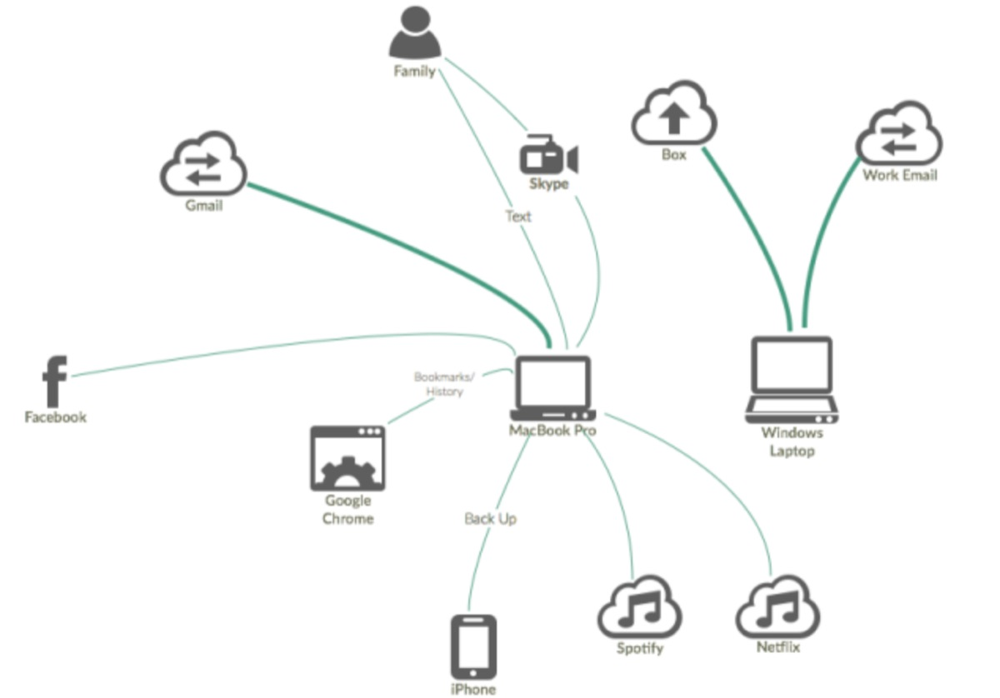
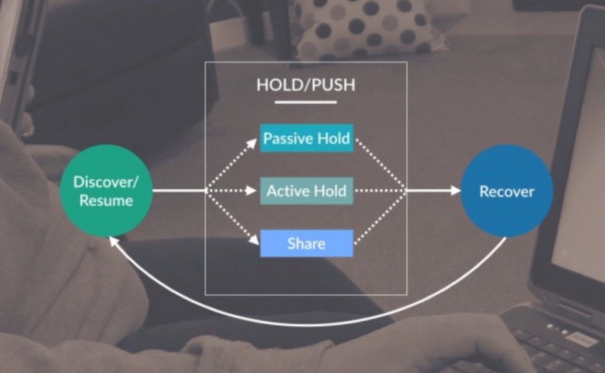
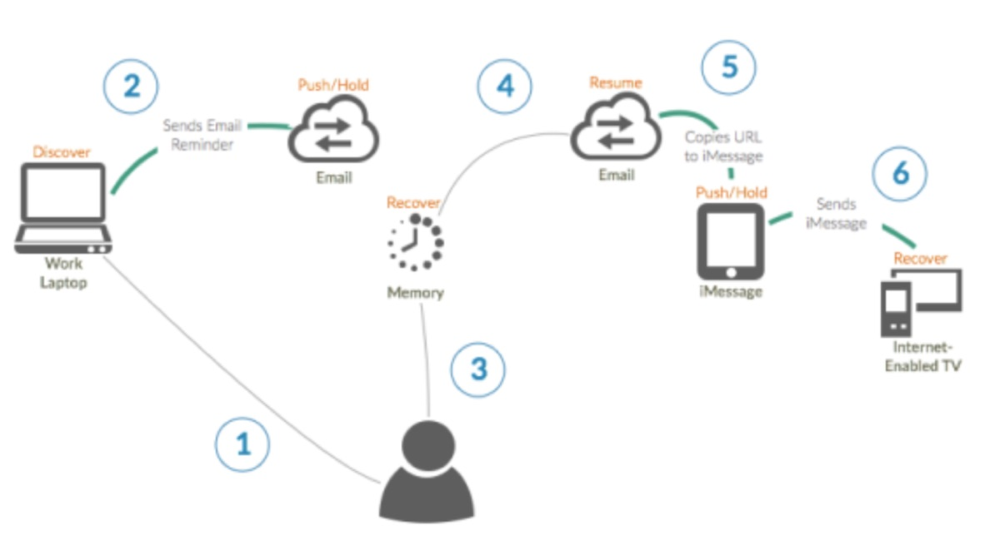

Multi-Device Task Continuity

For many consumers, software and hardware choices are increasingly becoming choices between incompatible brand ecosystems. In today’s marketplace, a consumer’s smartphone choice is likely to have a far-reaching influence on options for everything from file storage to wearable technology. With each app purchase or third-party service sign-up, consumers become further invested in a closed brand ecosystem. As start-ups are acquired or privacy standards change, consumers may become trapped in an ecosystem that no longer meets their needs.
Mozilla strives to create competitive products and services built with open source technologies, that protect users from vendor lock-in, and that address user needs. We believe supporting these values is not only good for consumers, but is also good for our industry. In February, we conducted a contextual user research study on multi-device task continuity. This user research will help Mozilla design current and future products and services to support users’ behaviors and mental models. This research builds on our our Save, Share, Revisit study conducted earlier this year.
Research Questions
Tasks: What tasks require task continuity?
Patterns: What are common task continuity strategies, patterns, and work-arounds? Why do they occur?
Behaviors: What are current and emergent behaviors related to task continuity activities?
Devices: What constitutes a unified experience across devices? Do some devices perform specialized tasks?
Context: Given that previous research has focused primarily on work and productivity environments, what do home and work boundaries look like for task continuity? 1
Mental Models: What are the expectations, metaphors, and vocabularies in use for task continuity?
Tools: How effectively do current features and tools meet continuity needs? Why do challenges occur?
Methodology
The Mozilla User Research team conducted three weeks of fieldwork in four cities: Columbus, OH; Las Vegas, NV; Nashville, TN; Rochester, NY. We recruited a demographically diverse group of 16 participants. Each participant invited members of their household to participate in the research, giving us 43 total participants between the ages of 7 and 52. All 16 interviews took place in the participants’ homes. In addition to our primary research questions, the semi-structured interviews explored daily life, devices, and integration points. Further, participants provided home tours and engaged in multi-device workflow future thinking exercises.
Device Ecosystems
If you are reading this blog post, there is probably a good chance that you work in the tech or design industry. You likely have fairly advanced technology usage compared to the average person in the United States. Your personal device and service ecosystem might look something like this:

The device and service ecosystem for the average person in the United States includes fewer elements and fewer connection points. For example, here is the ecosystem map of one of the 16 participant groups in our study:

As you can see in these diagrams, the average user has single points of connection between his primary device (MacBook Pro) and all the other devices and services he uses. The advanced user, on the other hand, is utilizing various tools to move content between multiple devices, contexts, and services.
The Task Continuity Model

Based on our research, we developed a general model of what the task continuity process looks like for our participants. Task continuity is a behavior cycle with three distinct stages: Discover, Hold/Push, and Recover.
The Discover stage of the task continuity cycle includes tasks or content in an evaluative state. At this stage, the user decides whether or not to (actively or passively) do something with the content.
The Hold/Push stage of the cycle describes the task continuity-enabling action taken by the user. In this stage, users may:
Passively hold tasks/content (e.g. By leaving a tab open)
Actively hold tasks/content (e.g. By emailing it to themselves)
Push tasks/content to others by sharing it (e.g. Posting it on Facebook)
The user may also set a reminder to return to the task/content at this stage (e.g. Set an alarm to call the salon when they open). It is possible for a single action to bridge more than one Hold/Push state (e.g. Re-pinning content on Pinterest shares it with followers and saves it to a board). It is also possible that a user will take multiple actions on the same task/content (e.g. Emailing a news article to myself and a friend).
In the Recover stage of the task continuity cycle, the user is reminded of the task/content (e.g. By seeing an open tab) or recalls the task/content (e.g. Through contextual cues). Relying on memory was one of the most common recovery methods we observed. In order to fully recover the task/content, the user may need to perform additional actions like following a link or reconstructing an activity path.
Once the task/content is recovered, the user is able to continue the task in the Resume stage. Here, the user is able to complete the task or postpone it by re-entering the task continuity cycle.

The Task Continuity Model allows us to clearly map the steps involved in a specific task continuity activity. To illustrate, one of our participants discovered a video that he wanted to watch at a different time and on a different device. Here are the actions he performed to achieve this:
Discover: Finds URL for video he wants to watch later.
Push/Hold: Copies URL to email. Sends email reminder to himself.
Recover: That evening, while browsing on his iPad, recalls that he wanted to watch a video from earlier in the day.
Resume: Scans email for reminder message, locates it. Copies URL to iMessage.
Push/Hold: Sends iMessage from tablet.
Recover: On MacMini-connected TV, receives iMessage, copies URL from iMessage to browser.
Research Findings
A selection of our research findings that we believe are the most relevant to UX professionals and engineers:
Ad Hoc Workflows: Participants used small, immediate tools such as text messages and screenshots to string together larger tasks.
Satisficed: Participants were generally satisfied with their current task continuity workflows, even when they knew they weren’t efficient.
Task Continuity Tools: Text messages, screenshots, and email were the primary task continuity strategies.
Screenshots: Participants tended to use screenshots rather than texting links. People were performing complex tasks using screenshots (like managing employee schedules).
Re-Searching: People tend to re-initiate a search to pull up content on a different device rather than pass it through email, text, or some other method.
Third-Party Services: While tools like Evernote may be popular in technology circles, they are essentially unknown outside them.
Cloud Storage: Most participants had been exposed to cloud storage services, often through work, but their personal use was usually limited to free accounts.
Organization is Work: Most participants avoid task continuity actions that require organization. Instead, participants relied on recovery techniques such as memory, scanning lists, and searching to recover tasks.
Barriers: Participants choose a path of least resistance to complete a task. When confronted by a barrier, most participants will detour; sometimes those detours become a journey away from a product or service. Barriers we observed included authentication, forced organization, and overzealous privacy and security measures.
Further Research
This research provided a valuable foundation and framework for our understanding of task continuity, but it is important to acknowledge that it was conducted only in the United States. We were particularly surprised by the reliance on texting and screenshots and believe it is important to explore this behavior in areas where carrier-based SMS programs are less popular. We plan to build upon these findings by expanding this research program to Asia in May 2015.
References:
Santosa, S., & Wigdor, D. (2013). A field study of multi-device workflows in distributed workspaces. Presented at the Proceedings of the 2013 ACM international joint conference on pervasive and ubiquitous computing. Pages 63–72.
Research and blog post by Gemma Petrie & Bill Selman
Originally published at blog.mozilla.org. on April 9, 2015